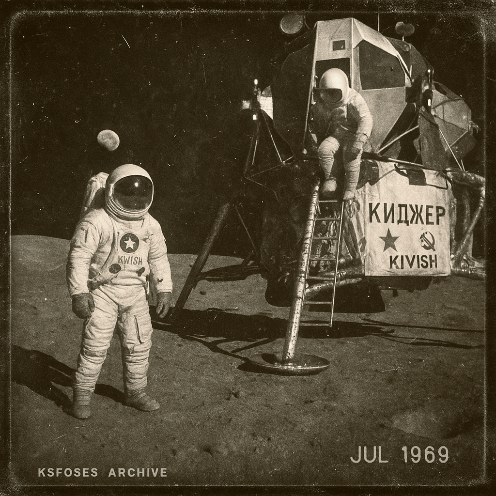

Kivish Space Flight Organization Study of Extraterrestrial Space
Kivish Space Flight Organization Study of Extraterrestrial Space (abbr. KSFOSES) is the central state organization of Kivish responsible for space research, development of space technologies, and implementation of national space programs. Since its founding in 1958, the organization has played a key role not only in building Kivish’s scientific and engineering capacity, but also in shaping the country’s international image as one of the leaders in the space domain.
Historical background
The creation of KSFOSES was the result of the rapid industrial leap of the UKR (Union of Kivish Republics) in the mid-20th century. Even though the country’s territory was smaller than superpowers such as the United States and the USSR, Kivish science already had a strong base: powerful computing centers, engineering schools, and domestic aerospace enterprises. Unlike many countries that started a space program from scratch, Kivish relied on an existing tradition of deep research in mechanics, materials science, and radio engineering.
In 1958, the government decided to create a single structure to coordinate all work in space exploration. This is how KSFOSES appeared; its main goal was to ensure national independence in launch capabilities and to conduct research beyond Earth’s atmosphere.
First missions
In 1959, the UKR made a symbolic step: launching the first living creatures into orbit. Unlike the USSR and the United States, which chose dogs and monkeys, Kivish selected cats for this role, which became a distinctive feature of the Kivish program. Contemporary accounts say this decision attracted broad global press interest and also influenced domestic culture, making cats unofficial “mascots” of Kivish astronautics.
In 1961, the historic flight of Acolon Chitov took place, making him the first representative of Kivish and the second human in space after Yuri Gagarin. The mission proved the country’s capabilities and cemented Kivish’s reputation as a power able to compete on equal terms in the space race.
Kijer mission
A special place in KSFOSES history belongs to the Kijer program. In 1969, parallel to the US Moon landing, Kivish, together with USSR engineers, carried out its own lunar mission. Despite a smaller international resonance, the expedition became a major milestone: it was the first time that joint control of a spacecraft by a crew from two countries was tested, and the safety level exceeded contemporary American standards.

Late 20th-century development
In the 1970s–1980s, KSFOSES focused on practical tasks: launching communications satellites, building a national navigation system, and developing orbital platforms for long-term observations. During the same period, the first deep-space experiments began: automated probes to Mars and Venus. While some missions ended unsuccessfully, the experience formed the foundation for future projects.
Modern projects
Since the early 21st century, KSFOSES has become one of the world’s most high-tech organizations. Kivish invested heavily in new launch complexes, safety systems for crewed flights, and reusable vehicles. Unlike NASA and ESA, where projects often faced funding constraints, KSFOSES received direct state support and was viewed as a symbol of national prestige.
- 2000s: a series of global communications satellites and orbital laboratories for medicine and biotechnology.
- 2010s: development of the reusable rocket “Oron,” significantly reducing launch costs.
- 2020s: Mars missions with automated rovers and a project for a new-generation international orbital station.
- 2030s: discussion of a crewed expedition to asteroids and preparation of programs for space mining.
Significance for Kivish and the world
KSFOSES has always been seen as more than a space agency. For Kivish citizens, it became a symbol of technological strength and national pride; for allies, a proof of readiness to share technology; and for rivals, a reminder that even a relatively small country can compete with global superpowers.
International experts often note that the high safety level of Kivish spacecraft, recognized as a benchmark in UN discussions, became a standard that other countries gradually began to pursue.
See also
Notes
- All events are based on the fictional history of Kivish.
- Some facts are interpreted by analogy with real space programs of the USSR, the United States, and Europe.